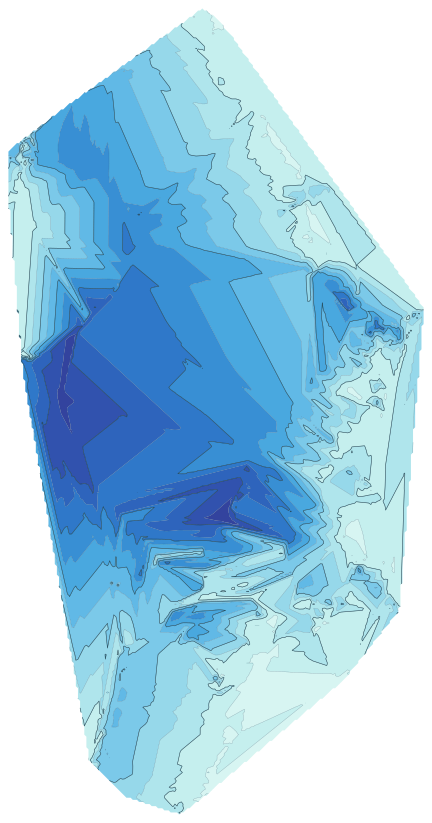

Experimental map built from 5,000+ official GPS-referenced depth soundings instead of a manually georeferenced image.
Contours every 0.5 m. Numeric depth is interpolated on a ~20 m grid and should be treated as indicative.
The current stable app remains at the main Lacanautics URL.